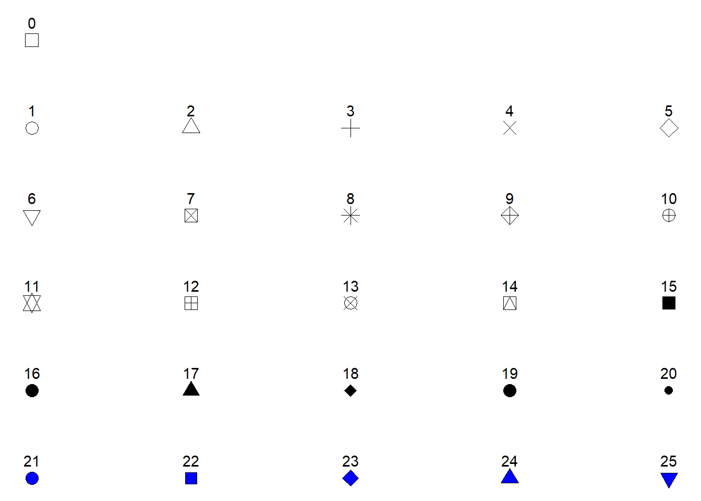
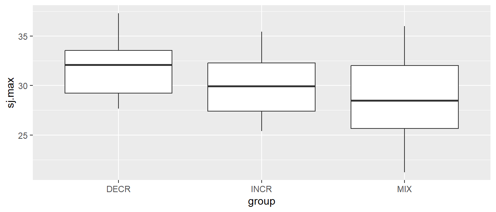
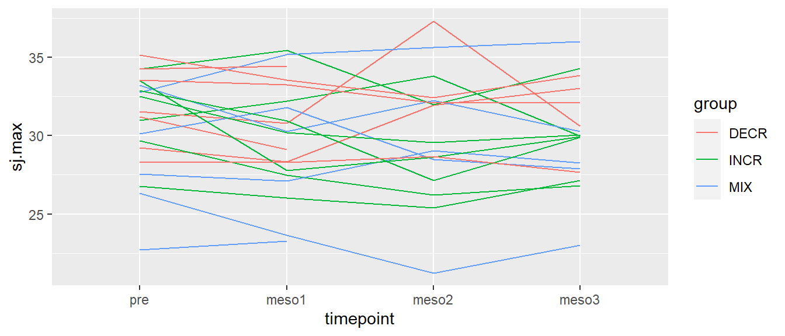
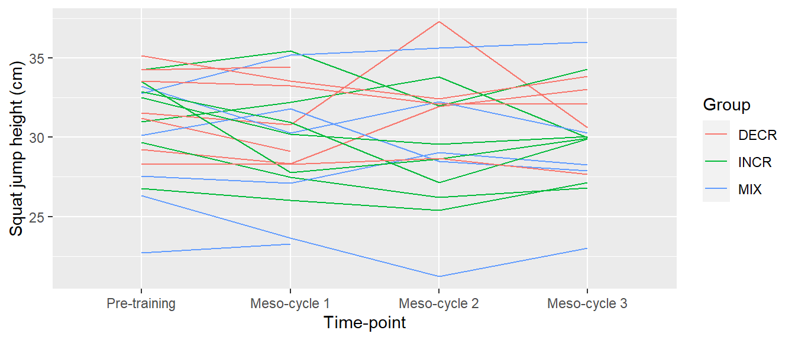
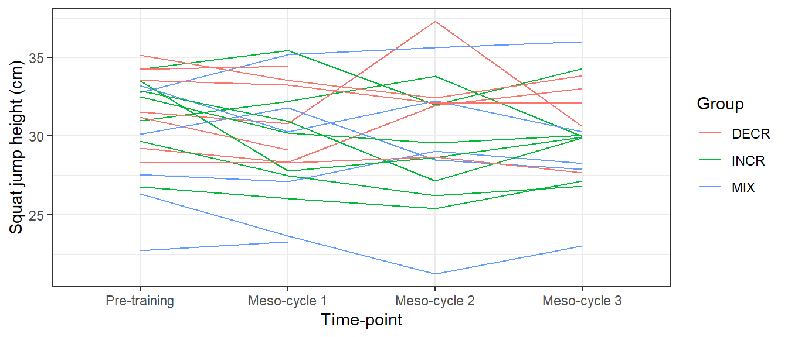
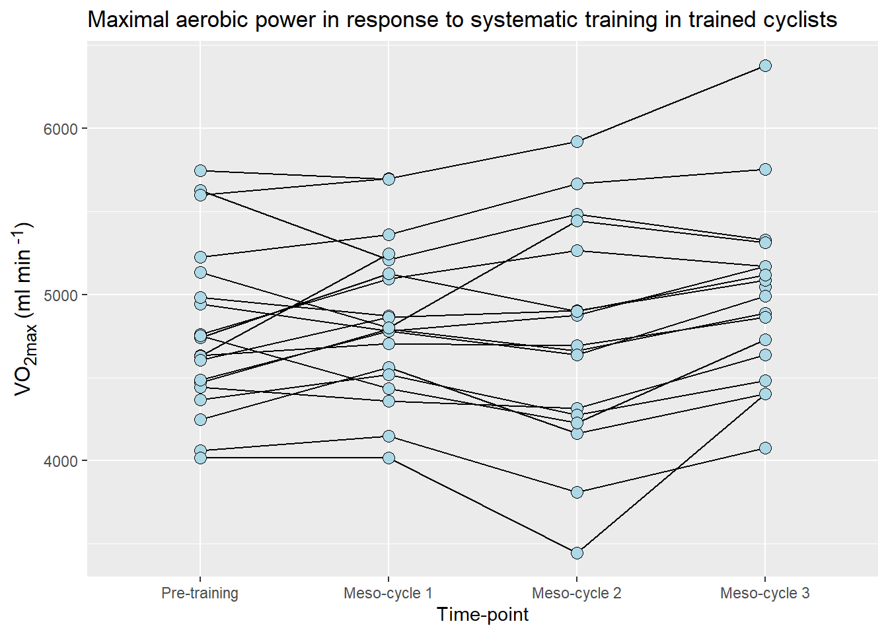

# Check if remotes is not installed, if TRUE, install remotes
if (!"remotes" %in% installed.packages()) install.packages(remotes)
# Check if exscidata is not installed, if TRUE, install exscidata from github
if (!"exscidata" %in% installed.packages()) remotes::install_github("dhammarstrom/exscidata")
# Load exscidata
library(exscidata)5 Creating your first graph
Data visualization is an efficient way to understand data. Using graphs, we can communicate characteristics of a data set in a way that would have been impossible with a limited number of summary statistics, such as the mean and standard deviation. In Chapter 2 of his book (Spiegelhalter 2019), Spiegelhalter touches upon this fact when he describes different types of graphs and their use to understand various data sets. An important argument for mastering data visualization is understanding what variables might explain variation in a given data set (Spiegelhalter 2019). In this sense, data visualization can be thought of as an initial step in understanding data; data visualization is an exploratory tool.
RStudio is a powerful environment for data visualization. Together with R (which is excellent for creating graphs), you can create and preview figures that represent your data in RStudio.
R has got several systems for creating figures, plots, graphs. In this course, we will use ggplot2. Another system for plotting comes with the base installation of R. This is sometimes referred to as base R (see this tutorial, or this. Another well described and used system is lattice. We choose ggplot2 because it works well with the tidyverse, and it is well described.
5.1 Resources
There are several good resources aimed at ggplot2:
5.2 Learning objectives
After working through this chapter, you should be able to answer:
- What are geoms?
- What is mapping data to aesthetics?
- What are theme components?
You should also be able to create your first graph.
5.3 Prerequisites
To follow the exercises below you will need to some data. For the purpose of this course, I have created a package that contains the data sets we need. In this chapter we will work with the cyclingstudy data set. To install the package (exscidata) you will need another package called remotes.
The code below first checks if the package remotes is installed, or more specifically, if "remotes" cannot be found in the list of installed packages. Using the if function makes install.packages(remotes) conditional. If we do not find "remotes" among installed packages, then install remotes.
The next line of code does the same with the exscidata package. However, since the package is not on CRAN but hosted on GitHub we will need to use remotes to install it. The part of the second line of code that says remotes::install_github("dhammarstrom/exscidata") uses the function install_github without loading the remotes package. The last line of the code below loads the package exscidata using the library function.
Next we need to load the tidyverse package. This package in turn loads several packages that we will use when transforming data and making our figures. I will include the line of code that checks if the package is installed, if not, R will download and install it. We subsequently load the package using library.
# Check if tidyverse is not installed, if TRUE, install remotes
if (!"tidyverse" %in% installed.packages()) install.packages(tidyverse)
library(tidyverse)── Attaching core tidyverse packages ──────────────────────── tidyverse 2.0.0 ──
✔ dplyr 1.1.2 ✔ readr 2.1.4
✔ forcats 1.0.0 ✔ stringr 1.5.0
✔ ggplot2 3.4.2 ✔ tibble 3.2.1
✔ lubridate 1.9.2 ✔ tidyr 1.3.0
✔ purrr 1.0.1
── Conflicts ────────────────────────────────────────── tidyverse_conflicts() ──
✖ dplyr::filter() masks stats::filter()
✖ dplyr::lag() masks stats::lag()
ℹ Use the conflicted package (<http://conflicted.r-lib.org/>) to force all conflicts to become errorsWe are now ready to explore the data set. But first we should talk about the main components of the ggplot2 system.
5.4 The ggplot2 system
When using the ggplot2 system we can think of the resulting graph as containing data that has been mapped to different coordinates, colors, shapes, sizes, and other attributes that determine what is being visualized. We are using different geometric representations of the data in the visualization.
When we map data in ggplot we use a specific function, aes() (short for aesthetic). We will use this inside the main engine, ggplot(). For this first simple example, we will create a data set by simulating some data. When you simulate data in R, you can tell R what should be the starting point in the random number generator. Using set.seed(100), we can recreate the same numbers from our “number generator” later. In the example below, we use rnorm() to simulate numbers from a normal distribution. Using the arguments n = 10, mean = 0, and sd = 1, we simulate randomly picking ten numbers from a distribution with a mean of 0 and a standard deviation of 1. These numbers are stored in a data frame that is assigned to an object that we have named dat.
The data set consists of two variables. We will start the process of creating the graph by creating the canvas, and this basically sets the border of the figure we want to make. The ggplot() function takes the data set as its first argument, followed by the aes() function that maps data to coordinates and other attributes. In this case, we have mapped our data to the x- and y-coordinates of the figure.
As you can see in Figure fig-empty-canvas, the code above creates an “empty canvas” that has enough room to visualize our data. The x- and y-axes are adjusted to give room for graphical representations of the data. Next we need to add geometric shapes (geom for short). These are functions that we add to the plot using the + sign. These functions all start with geom_ and has and ending that describes the geometric shape, like for example point or line.
We will add geom_point() to our empty canvas as plotted in Figure fig-empty-canvas. The geom_point function inherits the mapping from from ggplot(). Shapes, in this case points will be placed according to x- and y-coordinates specified in aes() used in the main ggplot function call. This means that we do not need to specify anything in geom_point at this stage.
In Figure fig-point-and-canvas we have added black points to each x- and y-coordinate representing x and y from our data set.
To extend the example we will add data to our data set. In the code below, we create a new variable in the data set using $ effectively giving us a new column in the data. We use rep("A", 5) to replicate the letter A five times and the same for B. The c() function combines the two in a single vector. We can use head(dat) to see what we accomplished with these operations. The head() function prints the first six rows from the data set.
x y z
1 -0.50219235 10.179772 A
2 0.13153117 10.192549 A
3 -0.07891709 9.596732 A
4 0.88678481 11.479681 A
5 0.11697127 10.246759 A
6 0.31863009 9.941367 BWe can see that we have an additional variable, z that contains the letters "A" and "B". This new variable can be used to add more information to the plot. Let’s say that we want to map the z variable to different colors. We do this by adding color = z to aes. This means that we want the z variable to determine colors.
ggplot canvas with colored points added.In Figure fig-point-with-color we can see that different colors are used for the two letters "A" and "B". Other attributes can also be specified like shape, fill or size. The shape specifies the appearance of the points. When we use use data to map to shapes, ggplot2 will start from the standard shape.

Possible shapes in the standard framework in R are shown in Figure fig-shapes-in-r. Shapes 0 to 20 can change colors while shapes 21 to 25 may have different border colors but also different fill colors. We may use this information to change the shape, color and fill of our points. Let’s say that instead of colored points we want filled points. We would then change the color = z argument to fill = z and select a point shape that can be filled (shapes 21-25, see Figure fig-shapes-in-r. Notice in the code below that shape = 21 has been added to geom_point(). We have specified how points should be displayed.
ggplot canvas with filled points added.Since shape is an attribute we can map data to it. If we want data to determine both shape and fill we could add this information in the aes() function by setting both shape = z and fill = z. We now have to specify what shapes ggplot should use in order to be sure we can combine both shapes and fill. We will use scale_fill_manual and scale_shape_manual to do this. These functions lets you specify different values for aesthetics. Notice that we removed shape = 21 from the geom_point() function, but we added size to increase the size of the points (see Figure fig-point-with-fill-and-shape).
5.5 Different geoms using real data
We have seen that the basic ggplot2 figure maps underlying data to coordinates and geometric representations, such as points. We will go further by using some real data. We will be using the cyclingstudy data set from the exscidata-package. We will start by loading the data and select a few columns that we are interested in.
By using data("cyclingstudy") we will load the data set that is part of the exscidata-package to our environment. By looking at the environment tab you can see that this operation adds a data set to the environment. It has 80 observations and 101 variables. Using the glimpse() function from dplyr (which is loaded by loading tidyverse) we will get an overview of all variables in the data set. I have omitted the output from the code below, feel free to run the code in a quarto- or rmarkdown-document on your own.
We will store a selected set of variables in a new object for ease of use. We will call this object cycdat. We select variables using the function with the very suitable name select where the first argument specifies the data set, following arguments specifies what variables we want. Let’s say that we are interested in squat jump height. The exscidata package comes with descriptions of the data sets. By writing ?cyclingstudy in your console you will see the description of the data in your help tab. Squat jump is recorded as sj.max, we select this variable together with subject, group and timepoint to create a smaller data set.
# Assign a selected set of variables to a smaller data set
cycdat <- select(cyclingstudy, subject, group, timepoint, sj.max)
# Printing the data set
cycdat# A tibble: 80 × 4
subject group timepoint sj.max
<dbl> <chr> <chr> <dbl>
1 1 INCR pre 31.0
2 2 DECR pre 31.6
3 3 INCR pre 26.8
4 4 DECR pre 29.2
5 5 DECR pre 31.2
6 6 INCR pre 34.2
7 7 MIX pre 30.1
8 8 MIX pre 32.8
9 9 MIX pre 22.7
10 10 INCR pre 29.7
# ℹ 70 more rowsBy printing the object we can see that we have a tibble of 80 rows and 4 columns. A tibble can to a large extent be regarded as a data frame, and we will use these words interchangeably. Tibbles are new in the sense that they are developed as part of the tidyverse (Wickham and Grolemund 2017) 1. Printing a tibble will display the first 10 rows as we can see from the resulting output.
5.5.1 A plot of values per group
Let’s say that we want to see how the values differs between groups. Box-plots are a good way to start as they will bring a standardized way of summarizing data. Box-plots can be plotted using the geom_boxplot function. Notice below that we put group on the x-axis (the first argument in the aes function) and sj.max on the y-axis. By doing so ggplot will make the x-axis discrete and the y-axis continuous.
Warning: Removed 4 rows containing non-finite values (`stat_boxplot()`).
We can add layers of more geoms to the same plot. We might want to add individual data points also. geom_jitter might be a good place to start. This geom is good as it can be plotted over a group variable and points gets “jittered” or spread so we avoid overlap.
# Creating a boxplot of all values per group
ggplot(cycdat, aes(group, sj.max)) + geom_boxplot() + geom_jitter()Warning: Removed 4 rows containing non-finite values (`stat_boxplot()`).Warning: Removed 4 rows containing missing values (`geom_point()`).Notice that we get warnings saying that there are some data missing, these values are removed from the calculation of summary statistics in the box-plots and omitted from plotting of the points.
5.5.2 Data over time per group and individual
In the data set we have a time variable consisting of the labels “pre”, “meso1”, “meso2” and “meso3”. When we load the data into R we do so without providing information about the order of these labels. R will put them in alphabetical order when order is required (as in a figure). If we want to plot these data in the right order, we have to tell R that these data should have an order. We will convert the timepoint variable to a factor. Factors are variables that can contain more information than what is contained in each cell. Using the factor function we will set the order of the timepoint variable. We assign this transformation of the variable to its original place in the data frame.
We are now ready to plot data over time, where the time variable is correctly ordered. Let’s use the box-plot again to plot all values over time.
# Creating a boxplot of all values per time point
ggplot(cycdat, aes(timepoint, sj.max)) + geom_boxplot()Warning: Removed 4 rows containing non-finite values (`stat_boxplot()`).We do not see any great tendencies in the whole data set. To further explore the data we might want to have different boxes per group per time. We can accomplish this by adding fill = group to our aes function.
# Creating a boxplot of all values per group over time
ggplot(cycdat, aes(timepoint, sj.max, fill = group)) + geom_boxplot()Warning: Removed 4 rows containing non-finite values (`stat_boxplot()`).This is possible because geom_boxplots can be filled. The same separation of groups would have been accomplished using color = group, however, then the boxes would get different border colors instead. You might have noticed that the box-plots do not contain all the data, a few data points are outside \(1.5 \times IQR\) (interquartile range). This, by standard definitions, defines the data point as an “outlier”.
As mentioned above, box-plots does some summarizing and not all data is shown. To explore further we might want to track every participant. To do this we have to tell ggplot how to group the data. In aes() the group argument let’s you connect lines based on some grouping variable, in our case it will be subject. We will use a line to connect each participants score over time. Using color = group will additionally give every line a different color depending on which group it belongs to.
# Creating a line plot of all values per participant over time, color per group
ggplot(cycdat, aes(timepoint, sj.max, color = group, group = subject)) +
geom_line()Warning: Removed 2 rows containing missing values (`geom_line()`).
In Figure fig-sj-ind-data, each line represents a participant, different colors represents different groups.
5.5.3 Titles and labels
Often we need to add information to the plot to better communicate its message. Such information could be appropriate titles on axes and legends and extra text needed to explain aspects of the plot. Using the labs() function we can add information that will replace variable names that are being used for all variables that have been mapped in the figure. In the figure below we will start by adding better axis titles. This information goes into x and y in labs() which simply changes the titles of the x- and y-axis.
# Creating a line plot of all values per participant over time, color per group,
# adding axis labels
ggplot(cycdat, aes(timepoint, sj.max, color = group, group = subject)) +
geom_line() +
labs(x = "Time-point",
y = "Squat jump height (cm)")Warning: Removed 2 rows containing missing values (`geom_line()`).The resulting Figure fig-ind-data-axis-title now have better titles for each axis. Notice in the code above that titles needs to be specified with quotation marks. This is a tricky aspect of R, if we would have omitted the quotation marks we would have told R to look for objects by the name of e.g. Time-point, and this would actually mean that we tried to subtract time from point since - is interpreted as a minus sign.
We might want to add information to the legend also. Since we specified color = group in the aes() function, the same can be manipulated in labs. Lets just add a capital G.
ggplot(cycdat, aes(timepoint, sj.max, color = group, group = subject)) +
geom_line() +
labs(x = "Time-point",
y = "Squat jump height (cm)",
color = "Group")Warning: Removed 2 rows containing missing values (`geom_line()`).We still have the original labels for the time variable. Remember that we used the factor function above to set the order of the labels. Actually we specified the “levels” of the factor. We can use the same function to add better “labels”. In the code below, I will first change the variable in the data set and then use the exact same code for the plot.
cycdat$timepoint <- factor(cycdat$timepoint, levels = c("pre", "meso1", "meso2", "meso3"),
labels = c("Pre-training", "Meso-cycle 1", "Meso-cycle 2", "Meso-cycle 3"))
ggplot(cycdat, aes(timepoint, sj.max, color = group, group = subject)) +
geom_line() +
labs(x = "Time-point",
y = "Squat jump height (cm)",
color = "Group")Warning: Removed 2 rows containing missing values (`geom_line()`).
The same goes for the group variable. You can try to change the levels and labels of the grouping variable to make it more descriptive. You can type ?cyclingstudy in your console to read about the group variable and then use this information to write better labels using the factor function. In the factor function, the first argument is the variable you want to use as basis of your new factor, the second argument you need to specify is levels which sets the order and lastly you will need to set the labels for each level using labels =. If you write ?factor in your console you will get the help pages for the factor function.
5.5.4 Annotations
Annotation may become handy when you want to add elements to the graph that is not in the data set. Using ggplot2, annotations are added using the annotate() function. This function first needs to be specified with a geom, these are commonly text or lines or segments. In the code chunk below are several examples of annotations. First I save the plot as an object called myplot and then add different annotations to it.
myplot <- ggplot(cycdat, aes(timepoint, sj.max, color = group, group = subject)) +
geom_line() +
labs(x = "Time-point",
y = "Squat jump height (cm)",
color = "Periodization strategy")
# A text annotation
myplot + annotate("text", x = 1, y = 37, label = "This is an annotation")
# A line/segment
myplot + annotate("segment", x = 1, xend = 3, y = 25, yend = 35, colour = "red", size = 4)You can copy the code and run it yourself to see the results. annotate is documented here but documentation can also be accessed by typing ?annotate in your console. Try to read the documentation and add a transparent rectangle to a previous plot.
5.6 Themes
Themes in ggplot2 can be used to change everything else about the plot concerning text, colors etc. ggplot2 has some built in themes that are easily activated by adding them to the plot. For example the theme_bw() function will change the theme to a black and white one as in the figure below.
ggplot(cycdat, aes(timepoint, sj.max, color = group, group = subject)) +
geom_line() +
labs(x = "Time-point",
y = "Squat jump height (cm)",
color = "Group") +
theme_bw() # Adding a pre-specified themeWarning: Removed 2 rows containing missing values (`geom_line()`).
theme_bw.A collection of built in themes are documented here. Individual components of the theme can also be changed using the theme() function. There is a long list of theme components that can be changed using this function. The list can be found here.
If we put the theme function last in the ggplot call we will modify the existing theme. Let’s say that we want to change the color of the text on the x axis.
ggplot(cycdat, aes(timepoint, sj.max, color = group, group = subject)) +
geom_line() +
labs(x = "Time-point",
y = "Squat jump height (cm)",
color = "Group") +
theme_bw() +
theme(axis.text.x = element_text(color = "steelblue", size = 12, face = "bold"))Warning: Removed 2 rows containing missing values (`geom_line()`).theme_bw, with modificationsThe component axis.text.x can be modified using a function that changes appearance of text components, namely element_text. Similarly, other components are changed with specific functions for lines and rectangular shapes (see the help pages for theme).
5.7 Test your understandning
In this section you can try to implement what we have discussed above. An example solution exists below each figure by press of button.
In Figure fig-example-1, I have used the VO2max data from the cyclingstudy data set. I have made changes to the time variable (timepoint) to make the labels better. I have added a title to the figure and changed the appearance of the text. I will use an extra package called (ggtext)[https://wilkelab.org/ggtext/index.html] to make it possible to use markdown syntax in axis labels. In order to use ggtext you have to install it from CRAN.

5.8 References and footnotes
Spiegelhalter, D. J. 2019. The Art of Statistics : How to Learn from Data. Book. First US edition. New York: Basic Books.
Wickham, Hadley, and Garrett Grolemund. 2017. R for Data Science: Import, Tidy, Transform, Visualize, and Model Data. 1st ed. Paperback; O’Reilly Media. http://r4ds.had.co.nz/.